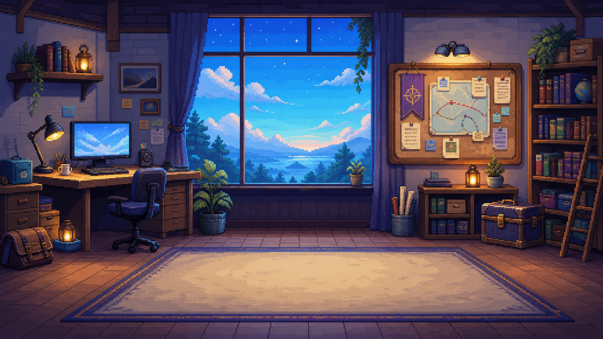

ACTIVE MISSION
BEGINNER · 35 MIN
Write a brief the Executor can verify.
Give Codex a goal, context, constraints, and observable done-when evidence—then inspect the plan before approving work.

Give Codex a goal, context, constraints, and observable done-when evidence—then inspect the plan before approving work.

Tonight, you are not asking Codex to “make it better.” You are giving an Executor enough information to produce evidence you can inspect.
Streaks celebrate returning to deliberate practice. Missing a day never erases evidence or blocks the story.
Complete the current evidence check to place this lamp on your workstation.
Reward economy and cosmetic inventory are intentionally not finalized.